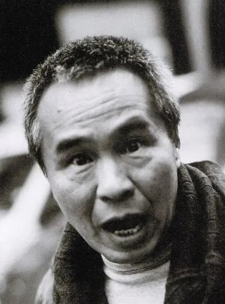
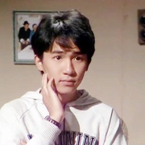

|

导演：侯孝贤 |
侯孝贤，台湾电影导演。 父亲原本为当地的教育科长，1948年全家移民到台湾，属外省籍客家人。侯孝贤喜爱使用长镜头、空镜头与固定镜位，让人物直接在镜头中说故 事，是他电影的一大特色。侯孝贤童年及青春期在台湾高雄县凤山市度过，国中高中皆就读省立凤山中学(今国立凤山高级中学)，在退伍后考上国立艺专电影科（今国立台湾艺术大学电影系）并顺利毕业。 真正使他在国际上享有一定知名度的是台湾三部曲（或称悲情三部曲）：《悲情城市》、《戏梦人生》与《好男好女》，确立了他台湾电影大师的地位。其中《悲情城市》是第一部获得国际三大影展之一威尼斯影展的金狮奖的华语电影。 |
|

主演：梁朝伟 |
梁朝伟，中国香港男演员。他是戛纳国际电影节最佳男演员奖和威尼斯国际电影节终身成就奖得主，也是香港电影金像奖和台湾电影金马奖获奖最多的男演员。 其外形清俊，戏路宽广，无论是严肃文艺还是搞笑喜剧，艺术片或商业武侠片，皆能胜任自如，是亚洲实力派演员的杰出代表，主演作品《花样年华》《春光乍泄》《重庆森林》《悲情城市》《色戒》《英雄》《无间道》等均为影史经典。 |
|
主演：辛树芬 |
辛树芬，台湾电影演员。作品有《童年往事》、《恋恋风尘》、《悲情城市》、《尼罗河的女儿》、《期待你长大》等。 1989年在拍完《悲情城市》之后，辛树芬彻底告别演员角色，回到美国，在加州和丈夫从事电脑生意，现有两个孩子。 |